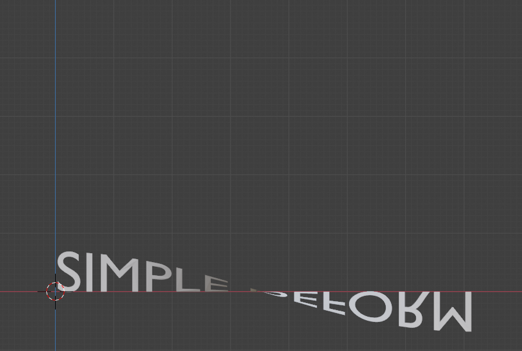
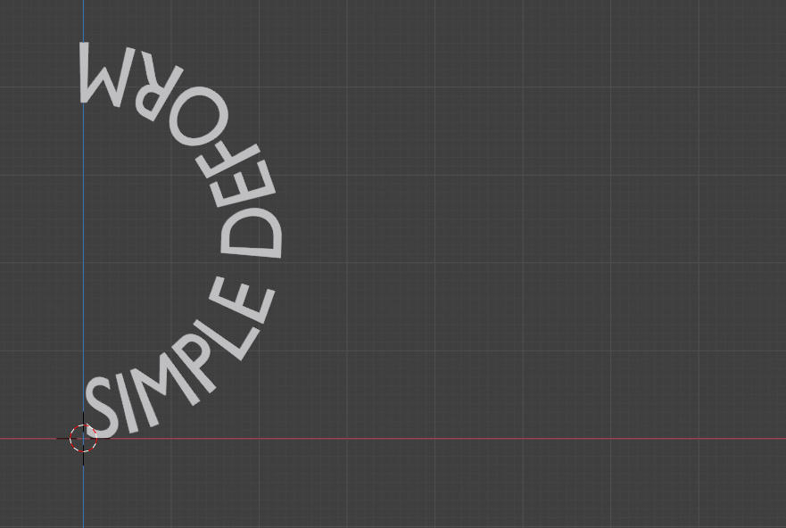
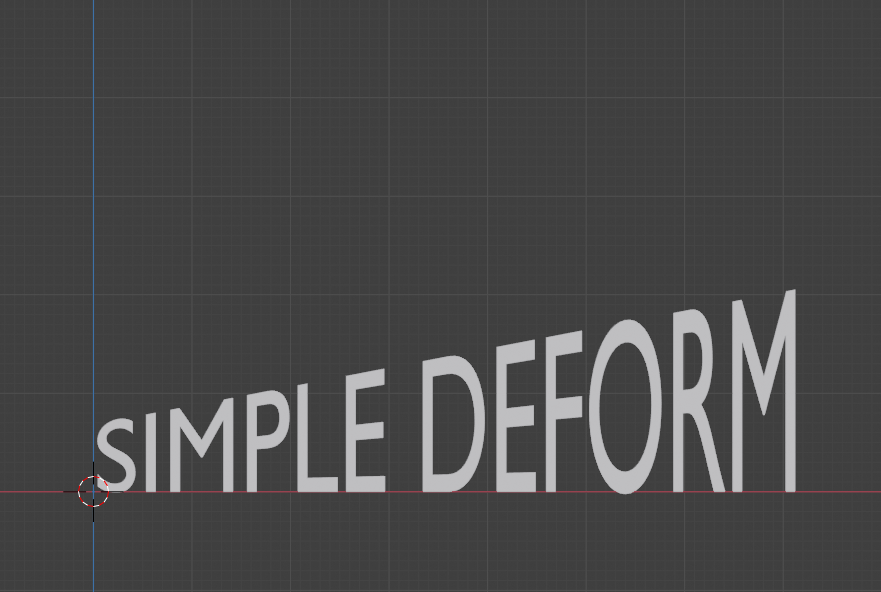
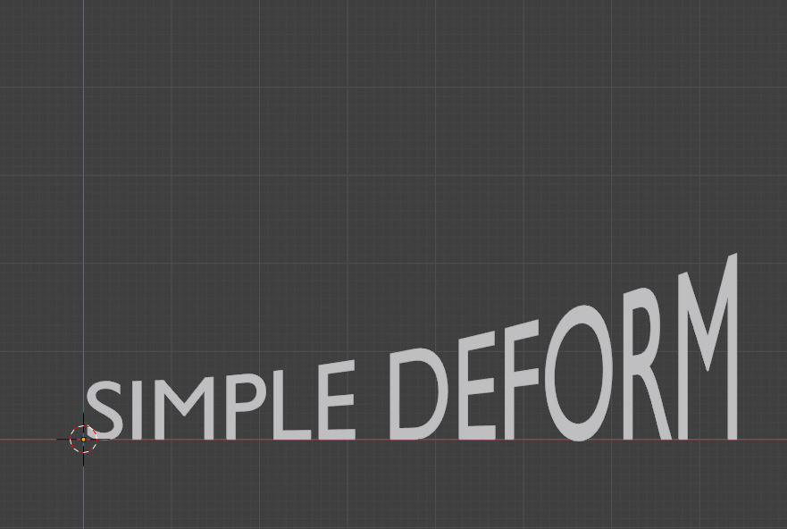
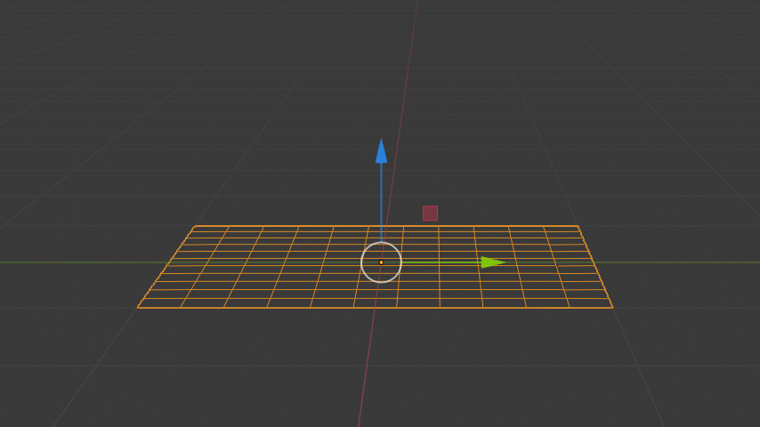
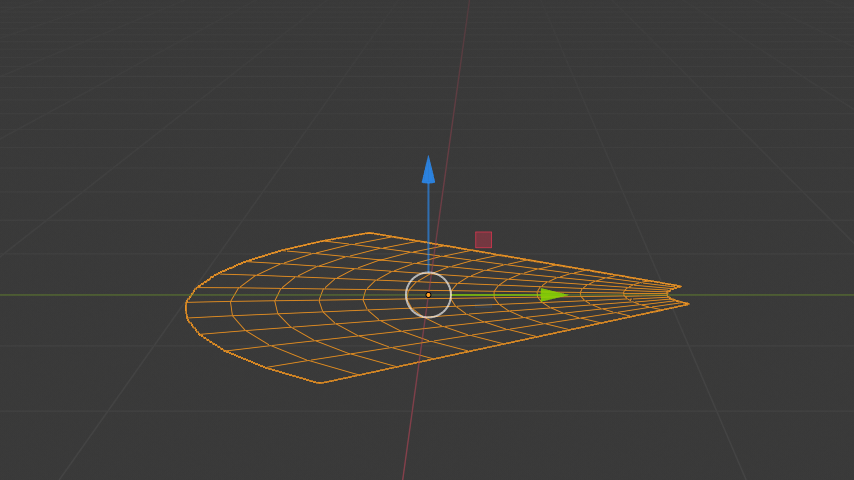
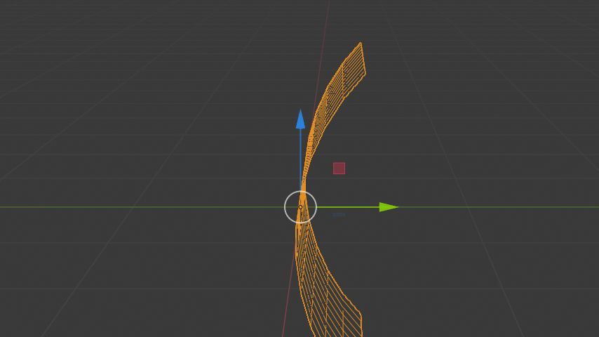
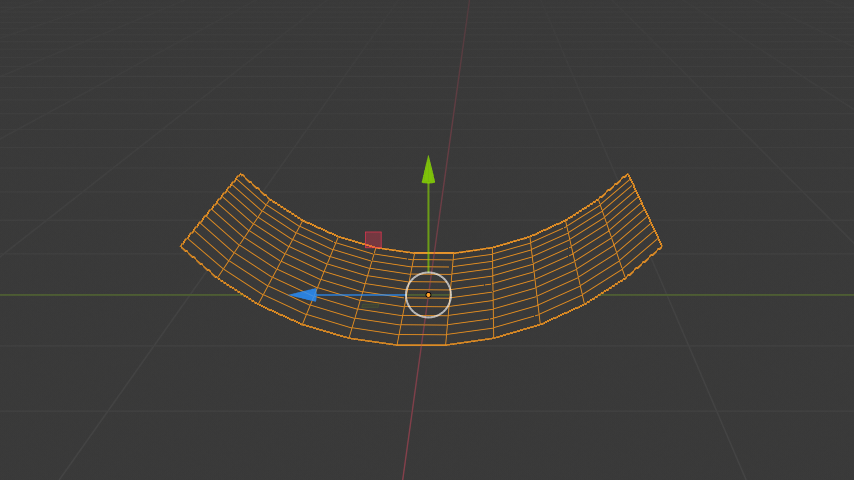

简易形变修改器¶
The Simple Deform modifier allows the application of a simple deformation to an object. Meshes, lattices, curves, surfaces and texts are supported objects. The deformation is either a rotation (Twist, Bend) or a scaling (Taper, Stretch). The amount of deformation is specified by the Deform Angle (rotation) or Deform Factor (scaling).
简易形变修改器¶
The deformation is calculated in the local coordinate space. Be aware that the local axes of an object can differ from the global ones. In the figure above, the global Z axis points up and the local Z axis points at 45°. The deformation is applied along a Deform axis, which can be set by selection from a list (X, Y or Z). By using the Limits field, the influence of the modifier can be restricted to a subset of the Deform axis. All distances are measured from the origin of the object. The vertices that are furthest away from the origin on the Deform axis represent the upper and lower limits. The origin of the object and the orientation of the local axes can be defined by an external Deform object (most of the time, an empty).
选项¶
- 模式
Defines the kind of deformation which will be applied. The figure below shows the four modes, applied to a text object. The origin of the object is at the very left of the text.
Twist around X axis (180°).¶
Bend around Z axis (180°).¶
Taper along X axis (factor = 2).¶
Stretch along X axis (factor = 0.3).¶
- 扭曲
Rotates the mesh around the specified Axis. Each vertex along the Deform axis is rotated around the object's origin. If the origin is inside the object, this results in a twisted appearance. Below the origin, there is a negative rotation and above the origin, the rotation is positive or clockwise. Vertices in the same plane as the origin are not rotated.
The total amount of rotation is specified by the angle and the rotation at each vertex is thus weighted by the distance of the vertex to the origin of the object. Vertices that are furthest away from the object origin have max rotation, positive or negative.
- 弯曲
Bends the mesh over the specified Axis. The Bend mode is more complex and less intuitive. The picture below shows the same plane but with different Deform and Bending axes.
Deform axis X or Y (a).¶
Deform axis Z (b).¶
Deform axis X. Local axis Y points down (c).¶
Deform axis X. Local axis Y points up (d).¶
Using a mesh plane and setting the Deform axis to X or Y will not result in any deformation (Fig a). You expect that the bending should be something like Figure (c) or (d). In a 3D world however, selecting the X axis introduces an ambiguity because bending along the X axis could result in Figure (c) or (d). The following pairs describe the selected deform axis vs. the desired bending axis: X and Z, Y and Z, Z and X.
In Fig (a), because of the Deform axis X, the Bending is along the Z. All vertices however have the same Z coordinate equal to the local origin. So, no deformation occurs. In Fig (d) the local axes are rotated around the Deform axis X, so that the Bending axis Z points to the left. So, all vertices are bend for their Z coordinate. The further away from the local origin, the more bending.
This explains also the unexpected result of Fig (b). The Deform axis is set here to Z (pointing up). So, according to the pairs above, the Bending axis defaults to X. All vertices of the plane are bent in their X coordinate. The further away, the more rotation occurs. Negative X coordinates are rotated counterclockwise.
- 锥化
Linearly scales along the specified Axis. The scaling factor is weighted by the distance from the origin of the object in the deform axis. No scaling occurs in the plane of the origin of the object. The maximum scaling occurs at the vertices that are furthest away from the local origin. This can be a positive or negative scaling, depending on the location of the origin. If the local origin is within the object, the deformed object appears tapered.
- 拉伸
Stretches the object along the specified Axis. If the local origin is within the object, the deformed mesh looks stretched like pulling a rubber from both sides. With a positive factor, the mesh gets longer in the deformed axis, wider at the borders and thinner at the origin than the original mesh. If the factor is negative, then the mesh is squashed in the deformed axis, thicker at the origin and thinner at the borders.
- 顶点组
The name of the vertex group that indicates whether and how much each vertex is influenced by the deformation. The amount of influence is determined by the weight in the Weight Paint map.
- 轴向，原点
定义变形的原点和轴的对象的名称(通常为空)。这个对象可以是:
用其旋转来控制变形的轴向(其局部 轴 现在用作变形轴)。
用其平移来控制变形的参考点。
用其缩放来改变变形的系数。
- Angle (Twist & Bend)/Factor (Taper & Stretch)
The total amount of deformation. Can be negative to reverse the deformation.
- 限制
You to can set the lower and upper limits of the deformation. The upper limit cannot be lower than the lower one. These limits are mapped on the Deform axis.
- 锁定X/Y/Z轴(只适用于扭曲、锥化和拉伸模式)
这些控件控制是否允许沿另外两个轴的坐标更改。例如，如果你沿着对象的Z轴 拉伸 ，它有可能通过锁定Y轴，使得只沿着X轴挤压。